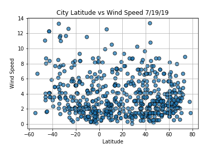

Wind Speed vs Latitude
Graph:

Explanation / Analysis:
- The Graph displays the relationshop between the change in city latitude and wind speed
- Wind speed is narrowed within a range of 0-4 as latitude increases.
- Same conclusion as Latitude vs Cloudiness Graph, need more sampling.